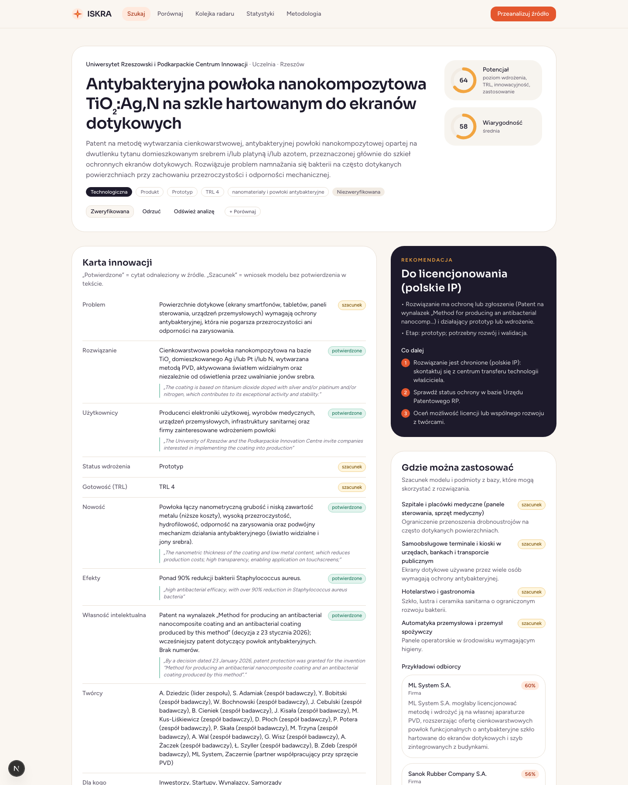
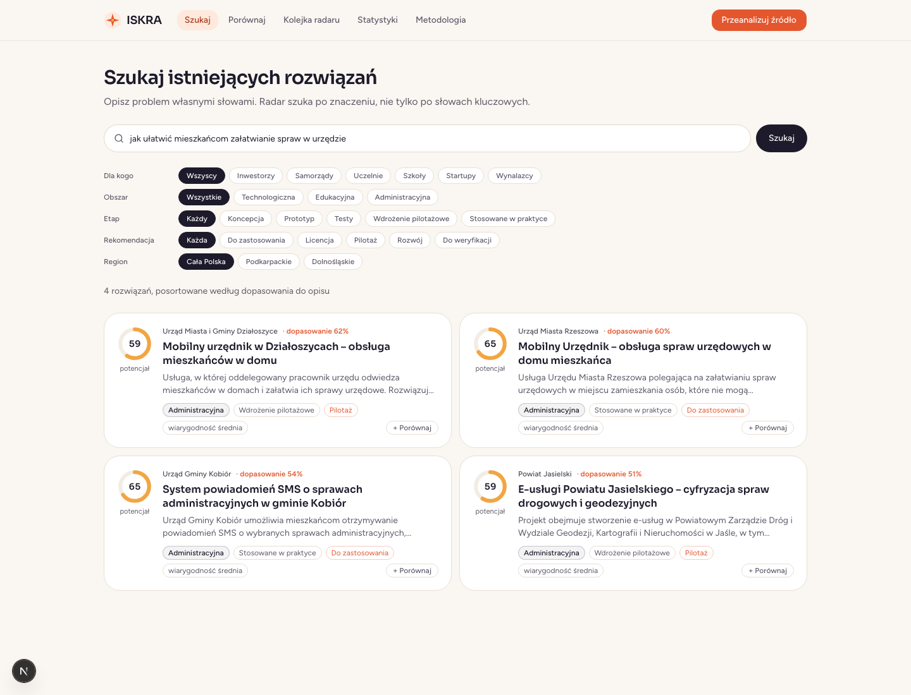
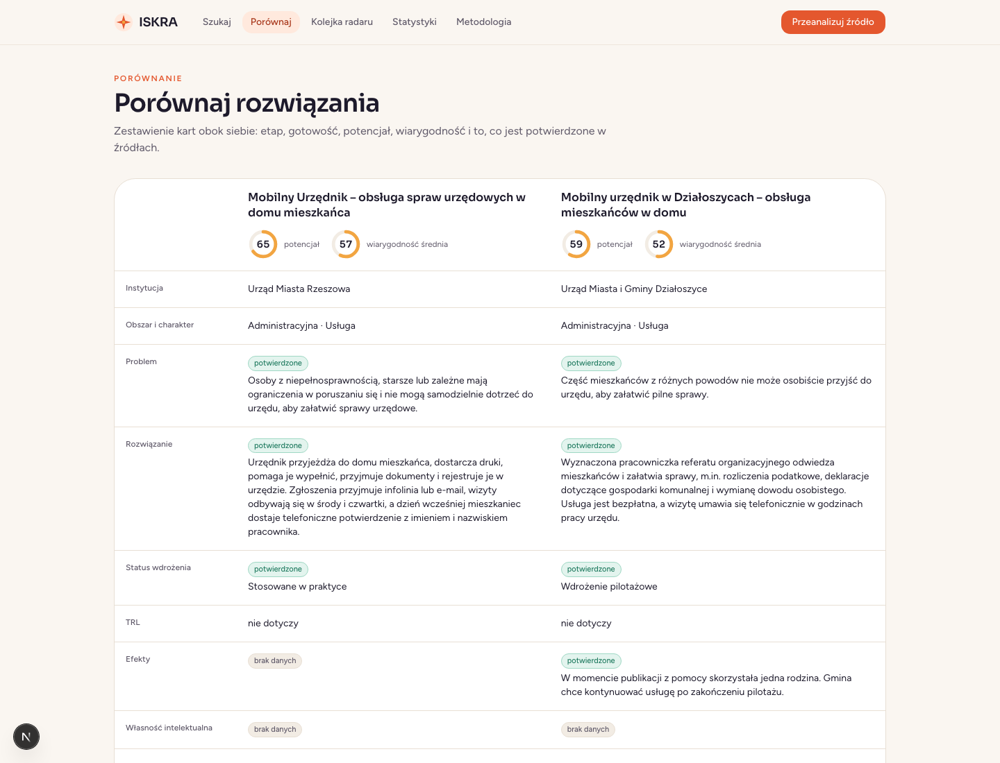

Radar, który sam odnajduje istniejące polskie innowacje technologiczne, edukacyjne i administracyjne, sprawdza ich rzeczywisty poziom rozwoju i pokazuje, gdzie mogą się przydać.
Patent uczelni, pilotaż w gminie, nowa metoda w szkole: każde w innych aktualnościach, BIP-ie albo komunikacie prasowym.
Dwie gminy budują tę samą e-usługę, dwie uczelnie ten sam czujnik, bo nie wiedzą o sobie nawzajem.
Z komunikatu nie wiadomo, czy to koncepcja, czy działające wdrożenie, i ile w nim faktów, a ile marketingu.
Cyklicznie: nowe artykuły co dzień, ponowne sprawdzenie źródeł znanych innowacji co tydzień. Zmiana w źródle = nowa ocena.
Model wypełnia kartę, ale to program sprawdza, czy cytat naprawdę jest w źródle.

| Kryterium | Skąd | Waga |
|---|---|---|
| Poziom wdrożenia (koncepcja → stosowane) | wprost z karty | 25% |
| Dojrzałość technologiczna (TRL 1–9) | wprost z karty | 15% |
| Innowacyjność | model, z podobnymi rozwiązaniami i publikacjami; analityk może poprawić | 30% |
| Potencjał zastosowania | model; analityk może poprawić | 30% |
| Wiarygodność (osobny wskaźnik) | program: cytaty, rodzaj źródła, dokumentacja, liczba źródeł | 0–100 |
Rekomendację wybierają jawne reguły: wymaga potwierdzenia · licencja (polskie IP) · gotowe do zastosowania · pilotaż · rozwój.
„Jak skrócić kolejki w urzędzie”: wyszukiwanie po znaczeniu, filtry dla inwestorów, samorządów, uczelni, szkół, startupów i wynalazców, porównanie kart obok siebie.


źródeł: uczelnie, samorządy, szkoły z Podkarpacia i Wrocławia
niepewnych trafień czeka na decyzję analityka
stron odsianych jako „to nie innowacja”
średnia wiarygodność (0–100)
Przykłady: recyklobeton z butelek PET (PWr), antybakteryjna powłoka na ekrany (UR i PCI), akustyczne wykrywanie dronów (PRz), Rzeszowski Panel Klimatyczny.
Adres listy aktualności i wzorzec adresu artykułu. Cała Polska bez zmian w kodzie.
Ok. 0,1 USD za pełną analizę innowacji, ułamek centa za przesianie strony.
Tylko dane opublikowane przez instytucje, anonimowa analityka, możliwy model lokalny (API zgodne z OpenAI).
Endpoint dla harmonogramu: crawl, wykrywanie, ponowne sprawdzanie zmian.
Publiczne API JSON z kartami i filtrami (/api/innowacje), analiza linku przez API, PostgreSQL + pgvector, Docker.
EUPL-1.2, gotowe do repozytorium Ministerstwa Cyfryzacji.
Adaptery API: CORDIS, NCBR, PARP, UPRP i EPO; dokumenty PDF; konta analityków PCI; powiadomienia o nowych innowacjach w obszarze zainteresowań.
Czas od publikacji do karty, liczba scalonych duplikatów, zapytania bez wyników (luki), odsłony kart, liczba rozwiązań przeniesionych do innych instytucji.
ISKRA · {{DEMO_URL}} · github.com/qamarq/iskra